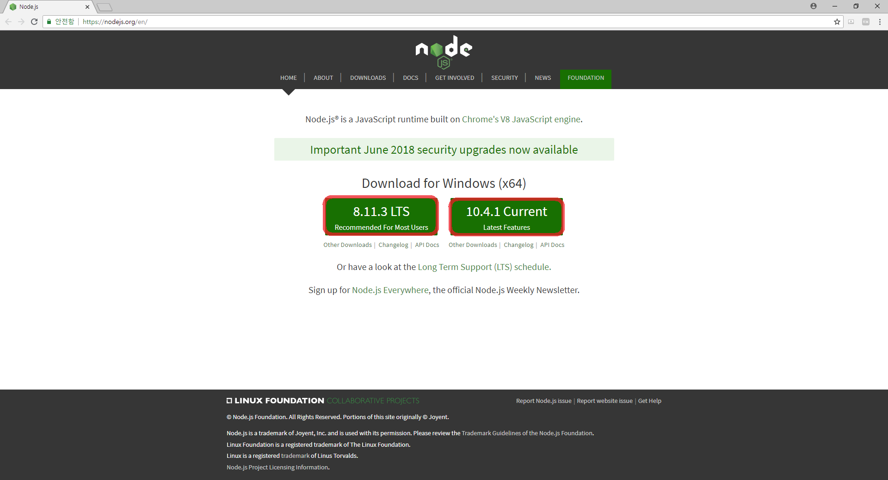
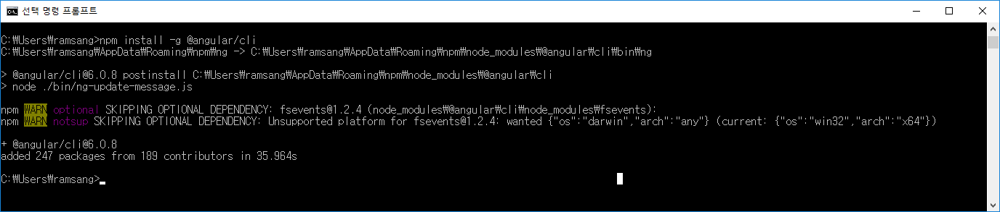

이번 장에서는 CLI를 이용해 Angular를 실행시켜보는 데 필요한 설치와 명령어를 통해 실행시켜보도록 하겠습니다.
AngularJS? Angular?
AngularJS => 1.x Version
Angular => After 2.x Version
nodejs homepage로 이동해서 node 설치하기

명령 프롬프트 열고 npm install -g @angular/cli 명령어 입력하기
cf) 윈도우키를 누르고 cmd를 입력하면 간편하게 열 수 있습니다.

열어둔 프롬프트에 ng new [projectName] 명령어 입력하기
Angular project가 만들어진 걸 확인할 수 있습니다.
열어둔 프롬프트에서 cd [foldername]명령어를 통해 프로젝트 폴더로 이동하고 ng serve 명령어 입력하기
명령 프롬프트에서 빨간색 네모 안에 주소를 입력하면 처음 시작된 Angular 프로젝트를 확인할 수 있다.
Next Chapter....
Chapter 02
- CLI로 만들어진 Angular 프로젝트 구조보기
- 간단하게 화면에 Hello World 찍어보기